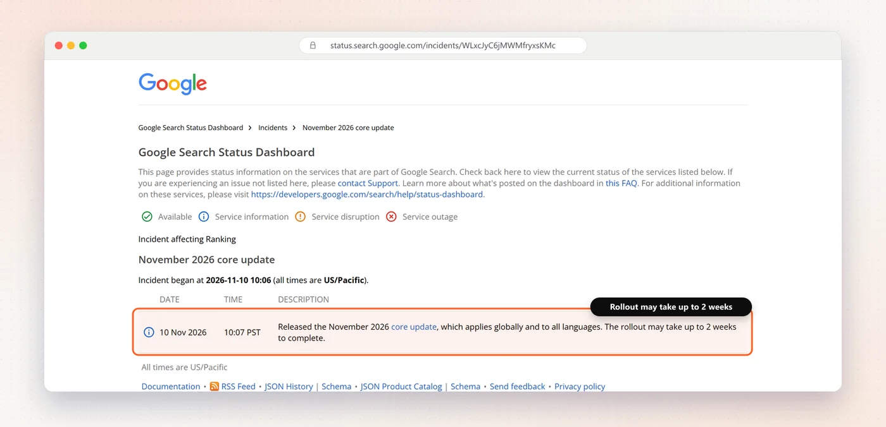
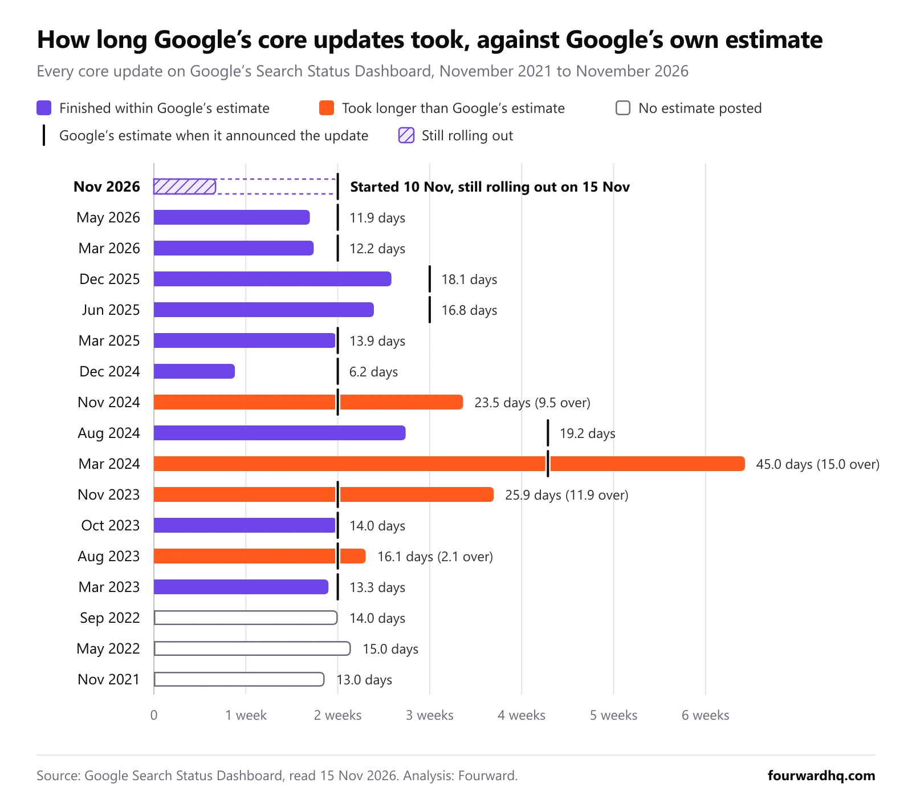
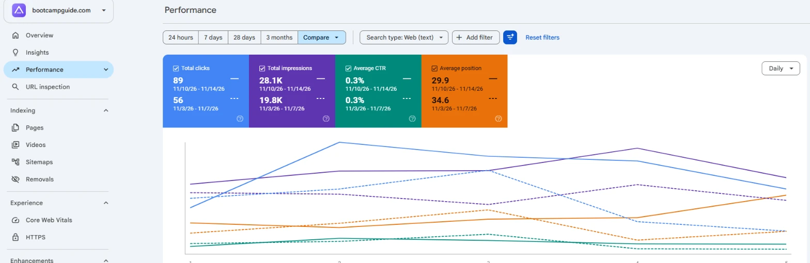
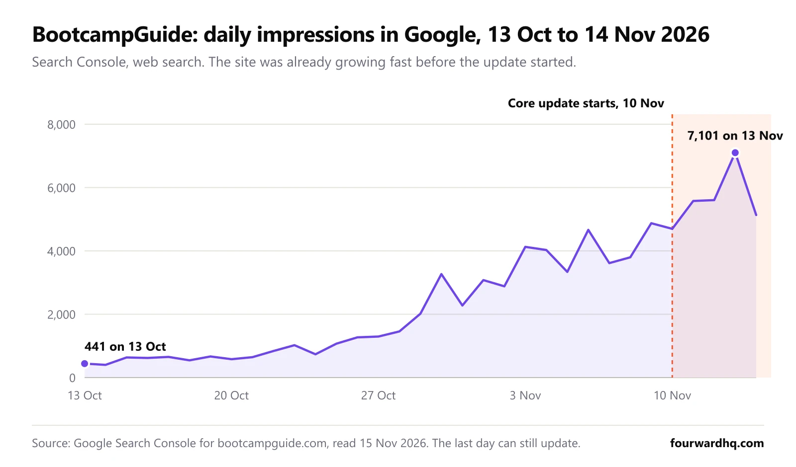
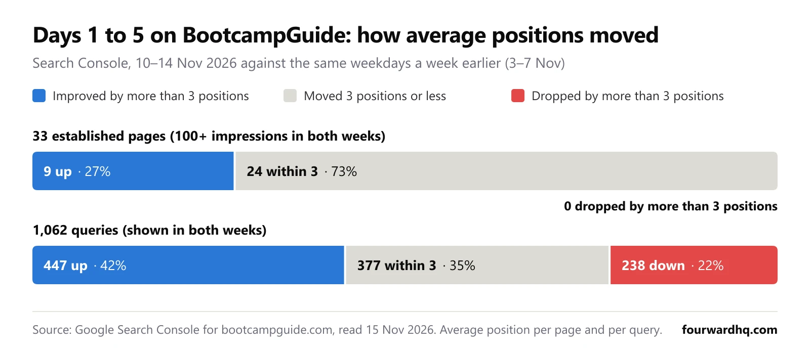

On this page
Google started the November 2026 core update on 10 November 2026 at 10:06 am Pacific time. It applies to every country and language, and Google says the rollout may take up to two weeks. As of 15 November it is still rolling out, so Google's estimate points to about 24 November.
Below is where the rollout stands, what Google's own records say about how long it will really take, what I'm seeing in Search Console on a site our team runs, and what to do before you change anything.
- Started
- 10 Nov, 10:06 am PT
- Google's estimate
- Up to 2 weeks
- Progress
- Day 5 of up to 14
From Google's Search Status Dashboard. This box checks Google's feed again each time the page loads.
- A Google core update is a broad change to how Google ranks pages. Google makes several a year, and they don't target specific sites.
- The November 2026 core update is Google's third core update of 2026, after March and May. It started on 10 November 2026 and covers all countries and languages.
- Google's estimate is up to 2 weeks. Across 13 core updates where Google gave an estimate, 9 finished on time. Both earlier November updates ran long, by 9.5 and 11.9 days.
- On BootcampGuide, a site our team runs, none of 33 established pages fell more than 3 positions in the first five days. Its traffic was already growing before the update began.
- Google's advice: wait a full week after the rollout ends, then compare that week with the week before 10 November. Don't make big changes mid-rollout.

I lead search, content and AI visibility at Fourward, which sells SEO work. The rollout facts come from Google's Search Status Dashboard, Google's documentation and Google's LinkedIn post, all checked on 15 November 2026. The site data is from BootcampGuide's own Search Console, read the same day. Where I give advice, I say it's mine.
What Google said about the November 2026 core update
Google announced the update with a one-line note on its Search Status Dashboard and a short post on LinkedIn. It hasn't published any new guidance for it.

| What | Detail |
|---|---|
| Started | 10 November 2026, 10:06 am Pacific time (18:06 UTC) |
| Where it applies | All countries and all languages |
| Google's estimate | Up to 2 weeks, which points to about 24 November |
| Type | Core update, the third of 2026, after the March and May updates |
| Gap since the last one | 161 days after the May 2026 core update finished on 2 June |
| New guidance | None. Google's core updates page was last changed on 10 December 2025 |
The only description Google gave
- On LinkedIn: Google Search Central called it "a regular update designed to better surface relevant, satisfying content."
- Who it's for: the same post says that means content "from all types of sites."
- No target: Google's documentation says core updates are broad and don't target specific sites or pages.
- When it's done: Google says it will update its ranking release history when the rollout is complete.
What hasn't changed
- The rules for a drop are the same. Google's core updates page still has the same checklist, covered step by step below.
- Smaller updates still happen quietly. Since December 2025 that page says Google also runs smaller core updates it doesn't announce.
- The quality bar is the same. Google still points site owners to its questions on helpful, reliable, people-first content.
The November update is the eighth ranking update Google has listed in 2026. My roundup of every Google update in 2026 covers the spam updates and the AI Overviews and AI Mode changes too.
How long will it take? What Google's own records say
Google gives an estimate when it starts each core update and logs the finish date when it ends. I pulled every core update from its ranking history and compared the two.

What the history shows
- The middle is about two weeks. Across 16 finished core updates, the median rollout took 14.5 days. The average was 17.4.
- Google is usually right. Of 13 updates where Google gave an estimate, 9 finished within it.
- It's been right six times in a row. Every core update since December 2024 finished inside its estimate.
- November is the exception. The November 2023 and November 2024 updates both said "up to 2 weeks". They took 25.9 and 23.5 days.
- The range is wide. The shortest took 6.2 days (December 2024). The longest took 45 days (March 2024).
When the November 2026 update could finish
| If it takes | Days | It finishes around |
|---|---|---|
| Google's estimate | 14 | 24 November |
| The median core update | 14.5 | 25 November |
| As long as November 2024 | 23.5 | 4 December |
| As long as November 2023 | 25.9 | 6 December |
My read: plan for 24 November, but don't be surprised by early December. If you sell online, the late case runs through Black Friday (27 November) and Cyber Monday (30 November). Either way, Google's advice is to wait one more full week after it ends before you judge anything.
Every core update since November 2021
| Core update | Started | Took | Google's estimate | On time? |
|---|---|---|---|---|
| November 2026 | 10 Nov 2026 | Still rolling out | Up to 2 weeks | Not yet known |
| May 2026 | 21 May 2026 | 11.9 days | Up to 2 weeks | Yes |
| March 2026 | 27 Mar 2026 | 12.2 days | Up to 2 weeks | Yes |
| December 2025 | 11 Dec 2025 | 18.1 days | Up to 3 weeks | Yes |
| June 2025 | 30 Jun 2025 | 16.8 days | Up to 3 weeks | Yes |
| March 2025 | 13 Mar 2025 | 13.9 days | Up to 2 weeks | Yes |
| December 2024 | 12 Dec 2024 | 6.2 days | Up to 2 weeks | Yes |
| November 2024 | 11 Nov 2024 | 23.5 days | Up to 2 weeks | No, 9.5 days over |
| August 2024 | 15 Aug 2024 | 19.2 days | Up to a month | Yes |
| March 2024 | 5 Mar 2024 | 45 days | Up to a month | No, 15 days over |
| November 2023 | 2 Nov 2023 | 25.9 days | Up to 2 weeks | No, 11.9 days over |
| October 2023 | 5 Oct 2023 | 14.0 days | Up to 2 weeks | Yes |
| August 2023 | 22 Aug 2023 | 16.1 days | Up to 2 weeks | No, 2.1 days over |
| March 2023 | 15 Mar 2023 | 13.3 days | Up to 2 weeks | Yes |
| September 2022 | 12 Sep 2022 | 14 days | None posted | n/a |
| May 2022 | 25 May 2022 | 15 days | None posted | n/a |
| November 2021 | 17 Nov 2021 | 13 days | None posted | n/a |
How I counted: durations are the ones Google's dashboard shows. "On time" means the rollout took no longer than the estimate in Google's first message, with a month counted as 30 days. The three oldest entries were added to the dashboard later, without an estimate.
What I'm seeing so far: BootcampGuide, days 1 to 5
BootcampGuide is a course comparison site our team runs, and you can read how we built it. It's young and it was already growing fast, so it's a good test of how not to misread an update. I compared 10 to 14 November with the same weekdays a week earlier, 3 to 7 November.

The headline numbers
| Search Console | 3 to 7 Nov | 10 to 14 Nov | Change |
|---|---|---|---|
| Clicks | 56 | 89 | +59% |
| Impressions | 19.8K | 28.1K | +42% |
| Average position | 34.6 | 29.9 | 4.7 places better |
| Impressions in AI features | 1.76K | 2.61K | +48% |
Why that isn't the update's doing
It looks like the update helped. The trend says otherwise.

- Growth was faster before. The week before the update, impressions grew 92% on the week. During the update's first five days, the gain was 42%.
- New pages did part of it. 278 pages had impressions in the update week and none the week before. Three guides we published on 7 and 8 November, on CA course fees and on CA and CFA coaching, added about 435 impressions a day between them.
- A site's own trend comes first. If your traffic was already rising or falling, the update didn't start it.
Pages that already ranked barely moved
The cleaner test is pages and queries that had impressions in both weeks. Here is how their average positions moved.

- Established pages held. Of 33 pages with 100 or more impressions in both weeks, 9 improved by more than 3 positions, 24 moved 3 or less, and none dropped by more than 3.
- The top page didn't move. Our Scaler forward deployed engineer course review went from 4.9 to 5.1.
- Queries moved more. Of 1,062 queries with impressions in both weeks, 447 improved by more than 3 positions and 238 dropped by more than 3.
- Most big jumps were deep. "Cyber security course in india" went from 73.8 to 59.3. That's page eight to page six, so no new clicks.
- A few fee queries slipped. "Data analyst course fees" went from 9.9 to 13.4, from the bottom of page one to the top of page two.
Five days in, BootcampGuide looks stable: no established page fell more than 3 positions, and most of the growth came from a trend and from pages that were already in motion. That's one site and an unfinished rollout, so I'll update this section a week after it ends.
How to check if the November 2026 core update hit your site
This is Google's method from its core updates page, with the filters I use in Search Console. Run it once the update is done.
- Confirm it has finished. Check the status box at the top of this page or Google's ranking history. Until Google marks it complete, the numbers can still swing.
- Wait one full week after it ends. Google recommends at least a full week before you analyze anything.
- Compare the right weeks. In Performance, choose Compare, then a custom range: that full week against a week before 10 November, on the same weekdays.
- Look at position before clicks. Clicks move with seasons and demand. Average position shows what the update did.
- Split the data. Check web, image, video and news search separately, and brand against non-brand queries.
- Size the drop per page. Use Google's own examples in the table below.
- Check AI features too. Search Console's generative AI report shows impressions in AI Overviews and AI Mode. Here's where to find that report.
| What you see | Example | What to do |
|---|---|---|
| Small drop | Position 2 to 4 (Google's example) | No drastic action. Don't rewrite pages that still perform well |
| Large drop | Position 4 to 29 (Google's example) | Review the site against Google's self-assessment questions, starting with the pages that fell most |
| Drop across the whole site | Most pages fall at once | Assess the site as a whole, not page by page. Ask someone outside the team to review it honestly |
Free check. 75 checks, one score out of 100, under a minute.
What to do now, and what to avoid
A rollout is the worst time to make big changes. You can't tell what worked, and Google is still re-ranking. My advice, in two lists:
Do this during the rollout
- Fix real breakage only. A broken page, a wrong redirect or a noindex by mistake has nothing to do with the update. Fix it now.
- Write down every change. Note the date of any edit, launch or redirect, so you can separate your changes from Google's.
- Save a baseline. Export your top pages and queries for the week before 10 November, so you have them ready.
- Keep publishing. New pages are fine. Pause rewrites of pages that already rank.
Avoid this
- Quick fixes. Google warns against removing page elements because you "heard it was bad for SEO."
- Deleting content. Google calls deletion a last resort, for content that can't be saved.
- Reading one day's data. Single days swing during a rollout. Compare full weeks.
- Blaming the update for a trend. Check whether the change started before 10 November, as it did on BootcampGuide.
If a recovery is needed, it takes time. Google says some changes show within days, but it can take months for its systems to confirm a site has improved. It may not show until the next core update, and Google also runs smaller core updates it doesn't announce.
What it means for B2B SaaS sites
If you run a SaaS site, here is how I'd read this update. These are my recommendations, not anything Google has said about SaaS.
- Group pages by type in Search Console. Filter pricing, comparison, integration and blog URLs separately. Updates rarely hit them all the same way.
- Watch comparison and "alternatives" pages first. They sit closest to the sale, and they get judged against other sites answering the same question.
- Separate brand from non-brand. Brand searches rarely move in a core update. Non-brand is where you'll see it.
- Check where you appear in AI answers too. Rankings and AI Overview citations can move separately. Our free AI visibility check shows what AI engines can read about your site.
- Keep the long game. The steps in our guide to SEO for B2B SaaS still apply: pages buyers compare, clear facts and earned mentions.
If you'd rather have someone look at it with you, this is what our search, content and AI visibility work covers.
Google's ranking updates in 2026 so far
For context, here is every ranking update Google has listed this year. My full 2026 roundup adds the AI Overviews, AI Mode and ads changes.
| Update | Started | Took |
|---|---|---|
| February 2026 Discover update | 5 Feb | 21.7 days |
| March 2026 spam update | 24 Mar | under 1 day |
| March 2026 core update | 27 Mar | 12.2 days |
| May 2026 core update | 21 May | 11.9 days |
| June 2026 spam update | 24 Jun | 2.0 days |
| August 2026 spam update | 18 Aug | 2.7 days |
| September 2026 spam update | 24 Sep | 13.7 days |
| November 2026 core update | 10 Nov | Still rolling out |
A full SEO, AEO and GEO audit, plus 30 minutes with our team to walk you through it.
FAQs
When did the November 2026 core update start?
Google released the November 2026 core update on 10 November 2026 at 10:06 am Pacific time (18:06 UTC). It applies to all countries and all languages.
Is the November 2026 core update finished?
Not yet. As of 15 November 2026, Google's Search Status Dashboard still lists it as rolling out. Google said it may take up to 2 weeks, which points to about 24 November.
How long do Google core updates take?
Across the 16 core updates that have finished since November 2021, the median rollout took 14.5 days. The shortest was 6.2 days (December 2024) and the longest was 45 days (March 2024).
What does the November 2026 core update target?
Google hasn't said. It called the update a regular update designed to better surface relevant, satisfying content for searchers from all types of sites. Core updates are broad and don't target specific sites or pages.
Should I change my site during the core update?
Not in a big way. Fix real problems, such as broken pages or a mistaken noindex, but hold rewrites and deletions. Google recommends waiting at least a full week after the rollout ends before analyzing the effect.
How do I know if the core update hurt my site?
Once it has finished, wait a week. Then compare that full week with a week before 10 November in Search Console. Google treats a move from position 2 to 4 as a small drop that needs no drastic action, and a move from 4 to 29 as a large one worth a deeper review.
Is there a Google spam update in November 2026 too?
Not as of 15 November 2026. The core update is the only ranking update Google has listed this month. The last spam update was the September 2026 spam update, which started on 24 September.
Does the core update affect AI Overviews and AI Mode?
Google hasn't said. On BootcampGuide, impressions in AI features rose 48% in the first five days against the same weekdays a week earlier, but that's one site and the rollout isn't finished.
How many core updates has Google released in 2026?
Three: the March 2026 core update, the May 2026 core update and the November 2026 core update.
Sources
- November 2026 core update, Google Search Status Dashboard, checked 15 November 2026.
- History for Ranking, Google Search Status Dashboard, every core update from November 2021, checked 15 November 2026.
- Google Search Central on LinkedIn, 10 November 2026.
- Google Search's core updates and your website, Google Search Central, last updated 10 December 2025.
- Debugging drops in Google Search traffic, Google Search Central, last updated 10 December 2025.
- Creating helpful, reliable, people-first content, Google Search Central.
- Analyzing drops in Google Search traffic, Google Search Central on YouTube, 29 March 2023.
- BootcampGuide's Google Search Console, Performance and generative AI reports, 13 October to 14 November 2026, read 15 November 2026.